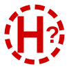
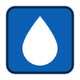

Mapa powstała jako oddolna inicjatywa mieszkańca Osiedla Wilga, wsparta przez Sołtysa Osiedla Wilga, Marcina Olkowicza.
Pomysł narodził się na zebraniu wiejskim, w dyskusji ze strażakami: w lesie gubi się sygnał GPS, a trafienie pod właściwy adres zajmuje cenne minuty. Dlatego mapa ma przede wszystkim ułatwić służbom ratunkowym dojazd do posesji: pokazuje nazwy ulic i numery domów, przejezdność dróg dla wozów strażackich, hydranty, zbiorniki wody i strome podjazdy.
To wersja robocza, uzupełniana na bieżąco. Przejezdność dróg i stromizny są wstępne i weryfikowane razem z jednostkami OSP.
Widzisz błąd albo brak? Kliknij Zgłoś uwagę, przesuń mapę tak, żeby pinezka wskazała miejsce, i kliknij Zgłoś tutaj: nie trzeba się logować, można dołączyć zdjęcie z terenu albo zrzut ekranu. Każdą uwagę sprawdzamy, zanim zmienimy mapę.
Raz otwarta mapa działa potem także bez zasięgu: ulice, numery, drogi i hydranty są zapisane w telefonie. Bez połączenia nie wczytuje się tylko podkład (OSM, ortofotomapa) i nie da się wysłać uwagi.
Wersja do druku: atlas A3 w PDF (8 arkuszy, ok. 9 MB) z legendą i indeksem ulic.
Do nawigacji: plik GPX (drogi w kolorach przejezdności, hydranty, miejsca do zawracania) do otwarcia w OsmAnd; widać go też w Android Auto.
Mapę obracasz dwoma palcami (na komputerze: Shift + kółko myszy). Przycisk ze strzałką ustawia północ z powrotem u góry.
Przycisk z celownikiem pokazuje Twoje położenie niebieską kropką. Położenie zostaje w Twoim urządzeniu; nigdzie go nie wysyłamy, chyba że sam wskażesz je w zgłoszeniu uwagi.

hydrant z mapy sieci — niesprawdzony
zbiornik wodny